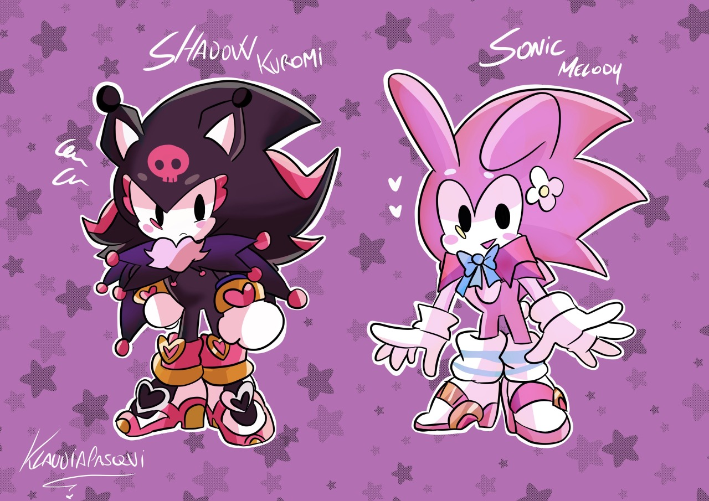
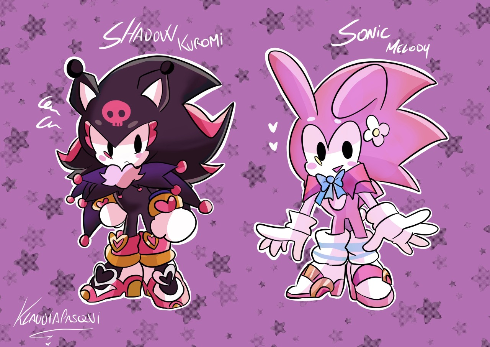

Bruno Nunes, brasileiro, vem, por meio do presente instrumento, declarar que ama Isabelle de maneira legítima, profunda e duradoura. Tal sentimento encontra respaldo em todas as evidências afetivas, emocionais e cotidianas, sendo considerado verdadeiro em sua essência.
Fica estabelecido que o amor de Bruno por Isabelle ultrapassa qualquer medida, escala ou comparação com outros afetos existentes no universo conhecido. Qualquer alegação em sentido contrário deverá ser considerada nula de pleno direito.
Fica consignado que, em eventual disputa de quem ama mais, o ônus da prova será sempre a favor de Bruno, diante da incontestável magnitude do sentimento por ele nutrido.
 
